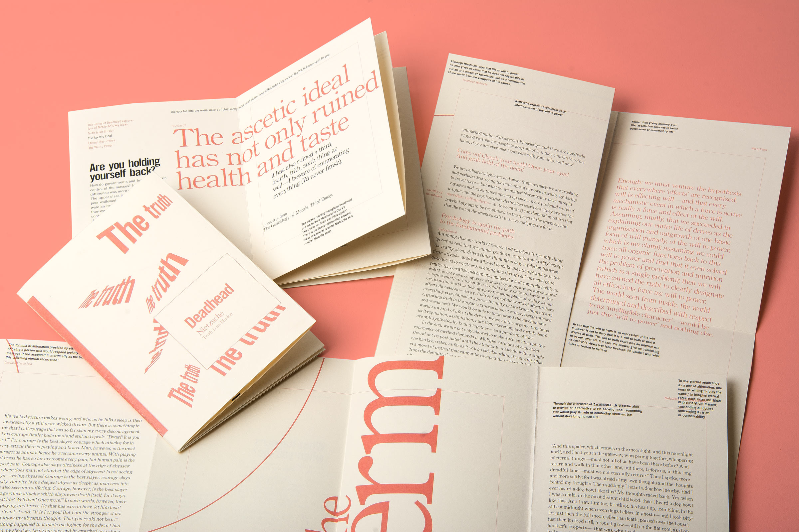
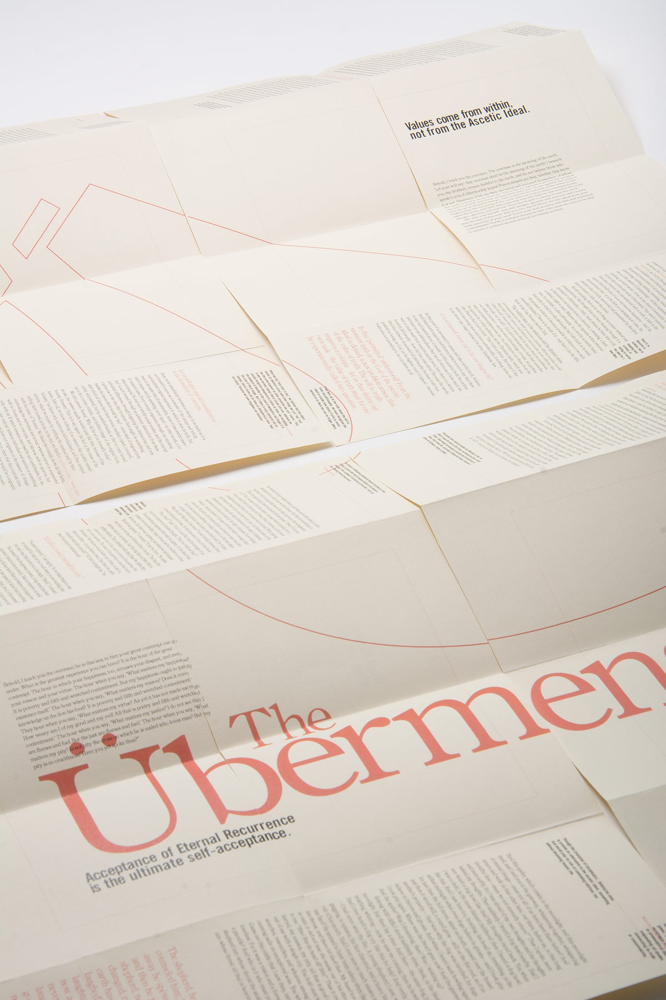

Deadhead is a zine that aims to introduce readers to philosophy. In this case it is four issues on Nietzsche, covering four of his key ideas. The zines unfurl and combine together into a poster to communicate a fifth and overarching idea—the Übermensch (the Superman). The Superman is a psychologically evolved human being.
To (try) become an Übermensch the reader would need to apply Nietzsche's teachings from the first four issues.

Nietzsche’s text is positioned among thematically linked quotes from Clark and a simple summary from the editor to help with understanding the different ideas.
This project answered the ISTD 2017 student brief ‘The Dead Wood Archive’. The brief asked to celebrate a randomly allocated book, but to also celebrate the concept of a book as a vessel of knowledge. The allocated book was a scholarly text called ‘Nietzsche on Truth and Philosophy’ by Maudemarie Clarke.
The problem with reading this book is that it requires a pre-existing knowledge of Nietzsche’s philosophy. However, for the amateur and naive reader, Nietzsche’s text is difficult to understand without any supporting reference. Therein lies a problem with Clark's text and, moreover, philosophy in general. It is inaccessible to the average reader.
Deadhead has been designed to be environmentally conscious and have a low production budget. This is integral to maintain a low cost price for the naive reader. This is achieved by condensing each zine on a single A3 page, a two colour print and no binding material—only folded and cut paper

The design was developed after conducting formal research into the influence of Deconstruction theory on typography by analysing Émigre magazine.
It's a shame how much knowledge is in libraries around the world, underutalised and yellowing. Deadhead takes and condenses that knowledge and packages it up in an easy to digest format, to spark the minds and add value to life.